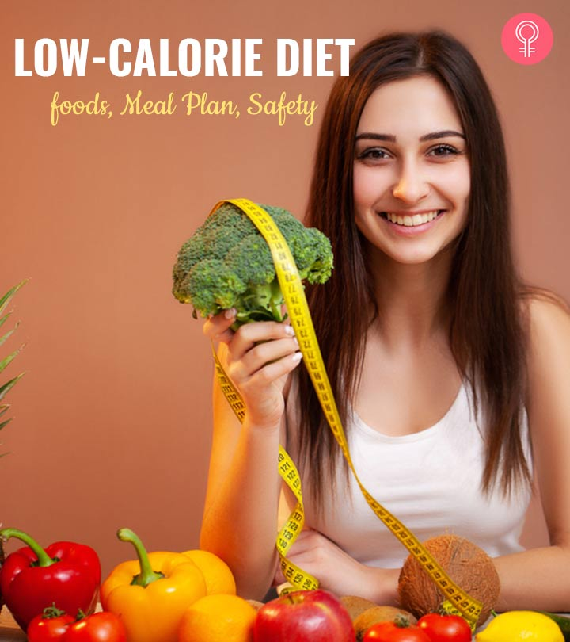

Low Callories Food
Low-calorie foods include water, tea, salad greens, soup broth, mushrooms, strawberries, vegetable soup, whole grain toast, cod, eggs, and low-fat cottage cheese. People on a weight-loss diet should aim to eat between 1500-1800 calories per day, depending on how active they are.
Below are 10 low-calorie foods, for more see the full ranking of all foods low in calories.

List of High Callories food
Whole Eggs
Once feared for being high in cholesterol, whole eggs have been making a comeback.
Although a high intake of eggs raises the levels of “bad” LDL-cholesterol in some people, they are one of the best foods to eat if you need to lose weight. They are high in protein and fat, and are very satiating.(1Trusted Source, 2Trusted Source).
One study in 30 overweight women showed that eating eggs for breakfast, instead of bagels, increased feelings of fullness (satiety) and made participants eat less for the next 36 hours (3Trusted Source). Leafy Greens
Leafy greens include kale, spinach, collards, swiss chards and a few others.
They have several properties that make them perfect for a weight loss diet, such as being low in calories and carbohydrates and loaded with fiber.
Eating leafy greens is a great way to increase the volume of your meals, without increasing the calories. Numerous studies show that meals and diets with a low energy density make people eat fewer calories overall.
Salmon
Fatty fish like salmon is incredibly healthy and very satisfying, keeping you full for many hours with relatively few calories.
Salmon is loaded with high-quality protein, healthy fats and various important nutrients.
Fish — and seafood in general — may also supply a significant amount of iodine.
This nutrient is necessary for proper thyroid function, which is important to keep your metabolism running optimally.
Studies show that a significant number of people don’t fill their iodine needs.
Salmon is also loaded with omega-3 fatty acids, which have been shown to help reduce inflammation, which is known to play a major role in obesity and metabolic disease.
Mackerel, trout, sardines, herring and other types of fatty fish are also excellent.
Bioled Potatoes
White potatoes seem to have fallen out of favor for some reason.
However, they have several properties that make them a perfect food — both for weight loss and optimal health.
They contain an incredibly diverse range of nutrients — a little bit of almost everything you need.
There have even been accounts of people living on nothing but potatoes alone for extended periods of time.
They’re particularly high in potassium, a nutrient that most people don't get enough of and that plays an important role in blood pressure control.
Tuna
Tuna is another low-calorie, high-protein food.
It’s lean fish, meaning it’s low in fat.
Tuna is popular among bodybuilders and fitness models who’re on a cut, as it's a great way to increase protein intake while keeping total calories and fat low.
If you're trying to emphasize protein intake, make sure to choose tuna canned in water, not oil.